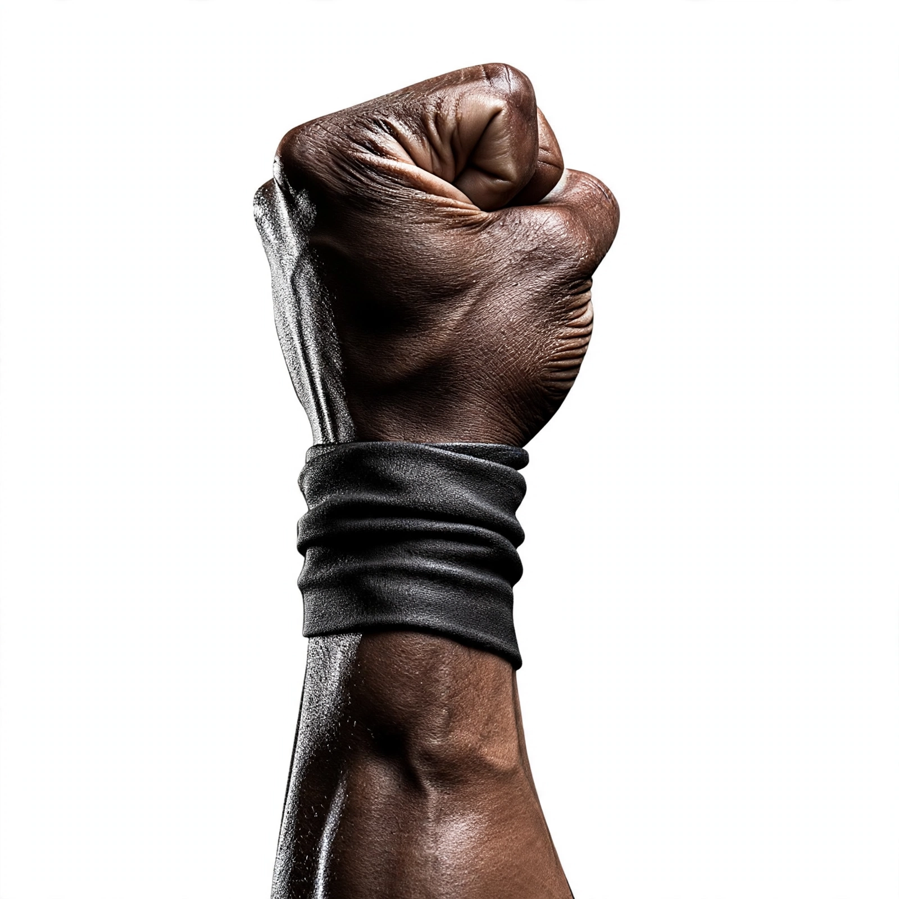

O Quilombo dos Palmares, também conhecido por seus habitantes como Angola Janga ("Pequena Angola"), foi o maior símbolo de resistência contra a escravidão nas Américas. Formado no final do século XVI na Serra da Barriga (região que pertencia à Capitania de Pernambuco, hoje estado de Alagoas), Palmares resistiu por mais de um século aos ataques de holandeses e portugueses.
